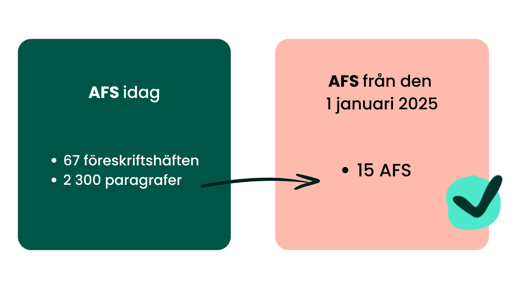

Arbetsmiljöverkets författningssamling
- Bakgrund till AFS
Arbetsmiljöverkets författningssamling (AFS) är en omfattande samling av föreskrifter och allmänna råd som styr arbetsmiljön i Sverige.
Dagens 67 föreskrifter kommer att slås ihop till 15 mer omfattande föreskrifter. De 2 300 paragraferna i de nuvarande 67 föreskriftshäftena kommer att omorganiseras och ingå i 15 nya föreskriftshäften. De nya reglerna träder i kraft den 1 januari 2025, det vill säga att det är då de börjar gälla.
